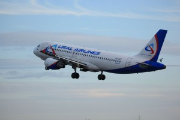

Баскетболистки УГМК устроили для фанатов автограф-сессию и разыграли призы
Баскетбольный клуб устроил праздник для фанатов
Баскетбольный клуб УГМК провел для жителей
Екатеринбурга настоящий
баскетбольный праздник с
зажигательными танцами,
конкурсами и автограф-сессией.
Горожане пришли в ТРЦ "Гринвич"
целыми семьями.
Этот праздник команда решила устроить
для своих болельщиков перед стартом
очередного сезона женской
баскетбольной Евролиги, до которого
осталось чуть больше недели. На встречу с
болельщиками пришли главный тренер
команды Олаф Ланге, Бриттни Грайнер, Ника
Барич, Евгения Белякова, Мария
Черепанова, Ольга Артешина,
Анна Петракова. У болельщиков была
возможность не только получить автограф
любимых игроков, но и сделать с ними селфи
и пообщаться с любимыми
баскетболистами.
А в конкурсах, в которых принимали
активное участие не только дети,
но и взрослые, поклонники клуба
выиграли множество призов.
"Уральские авиалинии" приглашают в Таиланд

С 1 ноября по 19 декабря можно отправиться в Таиланд из Екатеринбурга по выгодной цене.
Конец осени и начало зимы – уникальное
время для того, чтобы отправиться в
путешествие. Туристический сезон
прошёл, авиакомпании и отели снижают цены
на свои услуги, заманивая туристов перед
новогодними каникулами. Казалось
бы, это отличный шанс поймать лето и успеть
понежиться на солнце перед долгой уральской
зимой. Сейчас как раз есть уникальное
предложение выгодно провести осенние
каникулы на берегу моря.
В период с 1 ноября по 19 декабря можно
отправиться в Таиланд из Екатеринбурга
по выгодной цене. Авиакомпания "Уральские
авиалинии" запускает уникальное
предложение – с 25 октября открыта
продажа билетов в Бангкок и обратно по цене
от 20 000 рублей (без багажа, сборы включены).
Рейс выполняется с промежуточной
посадкой в Пекине по вторникам, пятницам
и с посадкой в Харбине по субботам, что даёт
возможность самостоятельно
спланировать нужный по
продолжительности тур и самим составить
себе программу. Например, в самом Бангкоке
можно полюбоваться храмом Изумрудного
Будды, храмом Зари и другими
достопримечательностями, или же
поймать последние лучики солнца на
белоснежных пляжах в Пхукете или Паттайе.
Мобильный интернет в Екатеринбурге разогнали до 300 Мбит/с
"МегаФон" перешёл на сверхскорости.
Новые скорости при выходе в сеть доступны
в смартфонах и планшетах. Связисты обещают
пиковые значения до 300 Мбит/с, как у
проводного интернета. Как отмечают в
пресс-службе "МегаФона", это стало возможным
благодаря запуску новой технологии
LTE Advanced – логическому продолжению 4G.
"МегаФон" первым из операторов связи
запустил в столице Урала LTE Advanced шестой
категории с такой скоростью передачи
данных. При этом, это максимальные значения, а вот
средние показатели будут
варьироваться от 50 до 100 Мбит/с, их, впрочем, тоже
достаточно для загрузки тяжёлого
контента.
Мы разогнали мобильный интернет до таких
скоростей, которые казались
фантастикой. За счёт того, что у нас самый
широкий частотный диапазон в 40 МГц, такие
значения пока не доступны ни одному
другому телеком-оператору
региона. Качественный доступ в
глобальную сеть с LTE Advanced в мегаполисе
гарантируют более 300 базовых станций,
– рассказал директор компании
"МегаФон" на Урале Валерий Величко.